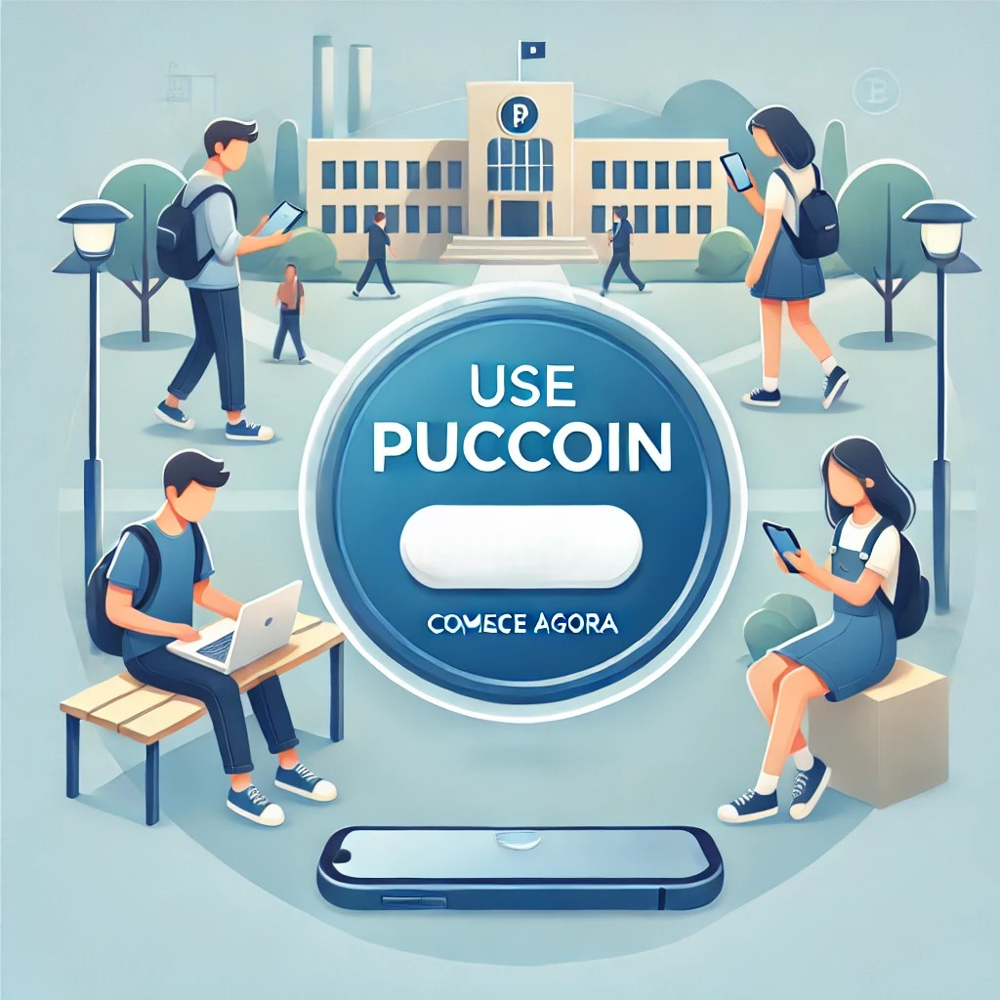
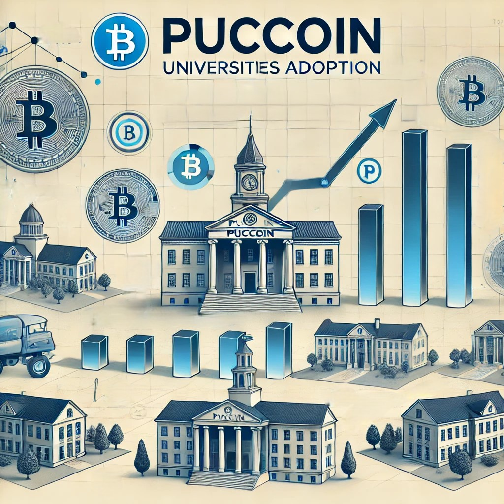

O Que é a PUCCOIN?
PUCCOIN ($PUCCN) é uma criptomoeda criada para universitários, permitindo trocas seguras, pagamentos digitais e integração financeira dentro do ambiente acadêmico.

Facilitando trocas acadêmicas e impulsionando a economia estudantil.
Adquira PUCCOIN AgoraPUCCOIN ($PUCCN) é uma criptomoeda criada para universitários, permitindo trocas seguras, pagamentos digitais e integração financeira dentro do ambiente acadêmico.
Utilize PUCCOIN para pagamentos entre colegas, compra de materiais acadêmicos e participação em eventos estudantis.
A PUCCOIN é baseada em tecnologia blockchain, garantindo transparência, segurança e proteção contra fraudes.
PUCCOIN está ganhando adoção entre estudantes, criando um novo ecossistema econômico universitário.
Adquira PUCCOIN agora através do Pump.fun e comece a usá-la em suas transações acadêmicas.
Comprar PUCCOIN